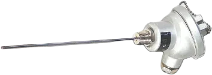

Sensores Sensores Termocuplas tipo J, tipo K y termorresistencias Pt-100 para uso industrial. Tipo JTipo KPt-100 Ver modelosDinter diseña y fabrica instrumentos de medición y control en Argentina. Cada equipo es desarrollado con criterio industrial, pensado para resistir las exigencias del uso continuo en planta.
Brindamos soporte técnico, reparación y restauración a nuevo a lo largo de toda la vida útil del equipo. Todos nuestros productos incluyen 12 meses de garantía.